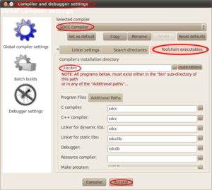
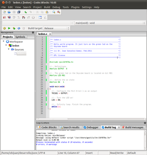

Code::Blocks is a multiplatform open source C/C++ IDE. It can be used with different compilers and cross-compilers. The Code::Block IDE can be used to program the PIC microcontrollers.

The Code::Blocks IDE is in the ubuntu's repositories. It can be easily installed by means of the ubuntu's software center or Synaptic.
| Code::Blocks quick installation. Just click on the link to automatically install Code::Blocks |
Optionally it can be installed by means of apt-get:
sudo apt-get install codeblocks
(See the picture on the right)
The installation is straightforward. Just download and execute the following .exe file:
| CodeBlock for Windows: codeblocks-10.05-setup.exe |

To verify that the CodeBlock + SDCC compiler are working properly, a "hello world" program will be compiled. This program is called "ledon.c". It just turns on the green led on the Skycube board. In this section we will just test that it compiles correctly (It still will not be downloaded into the board)